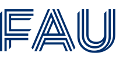
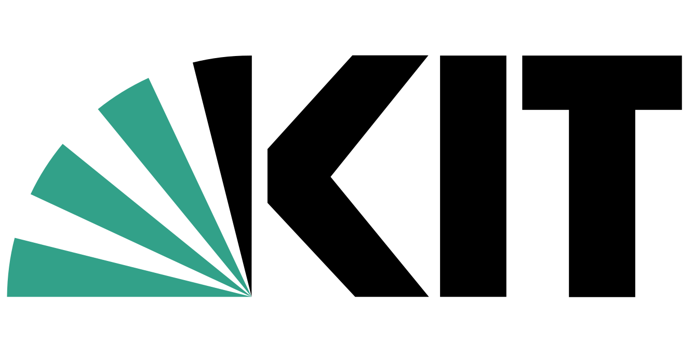
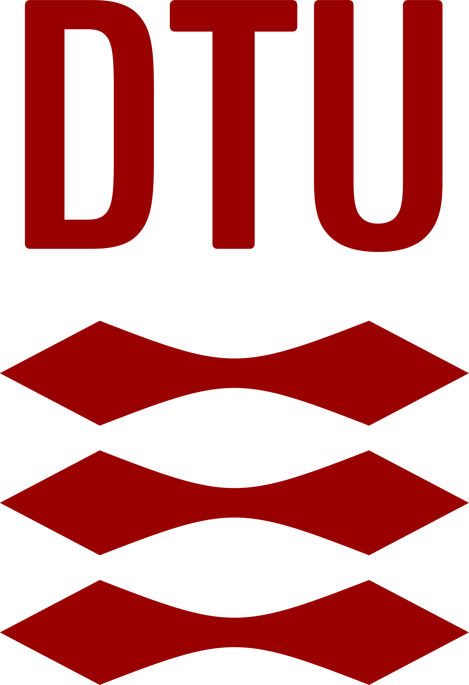
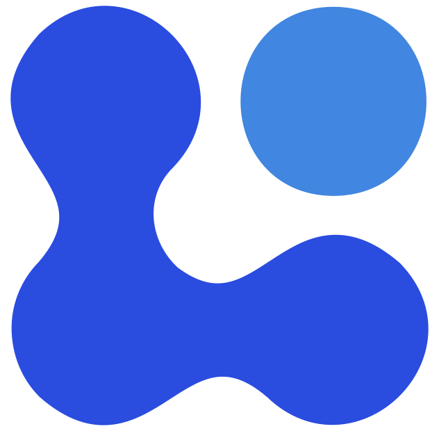
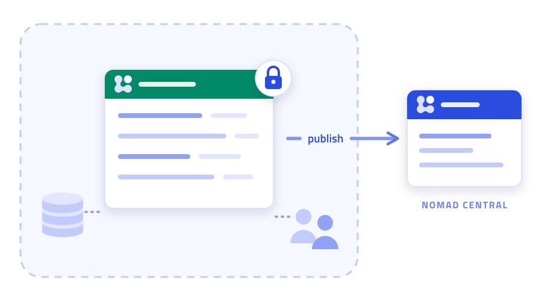
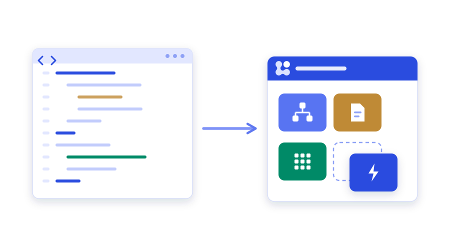
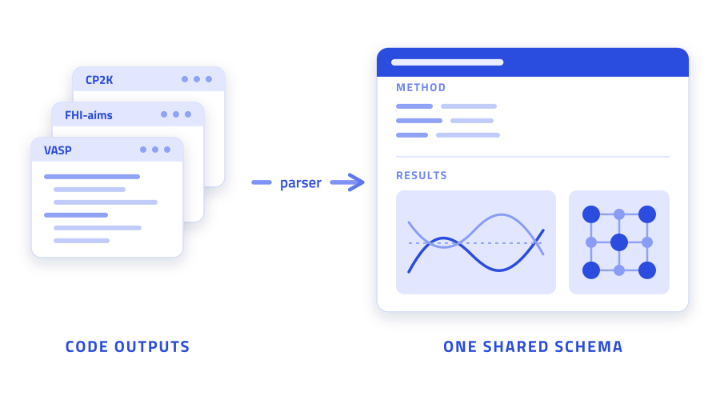
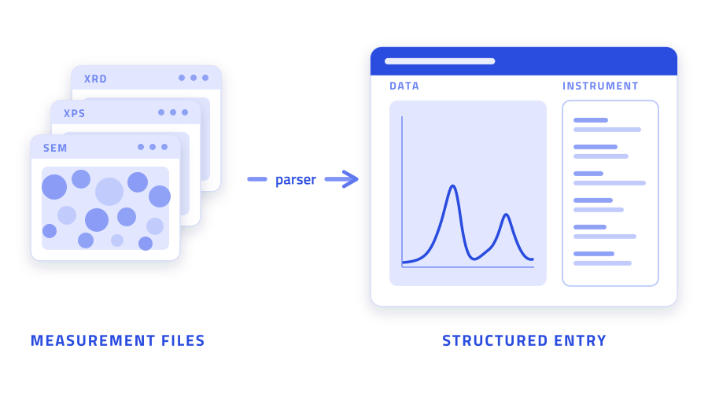

Open infrastructure for
scientific data.




NOMAD Central Platform
The flagship service for the materials science community. Free, open, and ready to use. Explore and reuse data from 19M+ entries, upload your own data, and publish with a DOI. No installation required.
Parse and structure raw outputs from 119 simulation codes and instruments.
Capture experiments as structured, FAIR data with ready-to-use templates for common lab workflows.
Document research workflows by connecting data entries, analyses, and their metadata in traceable provenance graphs.
Tailored search interfaces for materials science domains across simulation and experiment.
Analyze data in Jupyter, process microscopy images with FIJI, or visualize structures with VESTA.
Publish your project with a persistent, citable DOI.
Run NOMAD on your own infrastructure
Create a research data environment for your group, institution, or network with full control over access, storage, and operation.

NOMAD plugins Open catalogue of 220 accepted plugins to extend your Oasis with schemas, parsers, and integrations. Browse the catalogue NOMAD CAMELS Desktop software for lab instrument control and experiment automation. Explore CAMELSSelect community plugins or develop your own extensions to tailor NOMAD to your domain, organization, and research workflows.
Install or create schemas that model the data and processes of your domain.
Standardize lab procedures and data capture with reusable templates deployed across your organization.
Install community parsers or create your own for additional instruments, methods, codes, and formats.
Create search apps tailored to your domain, data model, and research questions.
Build and deploy custom dashboards for your data and workflows.
Deploy the domain-specific analysis software your group needs as NORTH tools.
Implement executable workflows directly in your Oasis for long-running, API-connected, or compute-intensive tasks.
Build custom APIs for domain-specific data or connections to other research infrastructure.
Get started with NOMAD
Find and reuse materials science community data. Publish and share your research data with a DOI.- Explore 19M+ research data entries
- Analyze repository data with hosted tools
- Share and publish your projects

Deploy Oasis
Run your own NOMAD instance. Your resources, your rules.- Control access and keep data on your infrastructure
- Customize for your research workflows
- Publish to NOMAD Central Platform from your Oasis

Develop plugins
Add support for new data types, interfaces, workflows, and integrations without changing the core platform.- Develop schemas and parsers for new data sources
- Build custom search apps, dashboards, and actions
- Integrate external tools and services

My group developed CrystaLLM, a language model for generating plausible structures for new compounds. Training an accurate model required millions of compatible crystal structures. NOMAD provided a large portion of the training data, with detailed and structured metadata to help us curate a high-quality training set.

In our lab, we need to keep track of how each thin-film sample was produced, including the target materials, process conditions, and characterization data and analysis. We use NOMAD Oasis to connect these pieces automatically as part of the experimental workflow. This gives us the complete sample history and makes previous experiments easy to trace and compare.

Simulation 68 codes and workflow tools Electronic-structure, molecular-dynamics, and workflow outputs are parsed automatically, with methods and results mapped to one shared schema. Browse simulation codes
Experiment 51 instruments and file types Measurement files from microscopes, spectrometers, and diffractometers become structured entries, with the instrument metadata kept alongside the data. Browse experimental supportNot on the list? Look for a community plugin, or build your own parser.